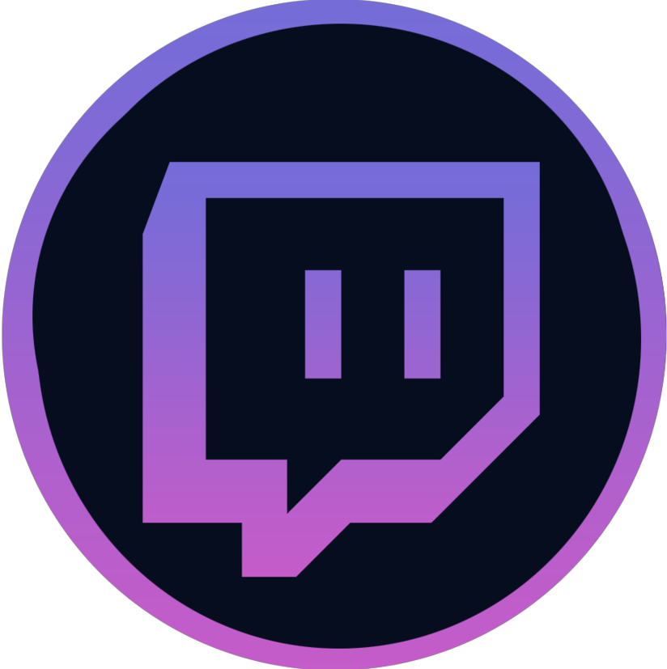
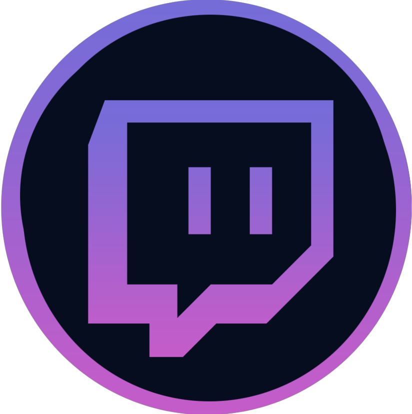

Counter-Strike : Global Offensive (CS:GO) étend le jeu de tir à la première personne en équipe que Counter-Strike original a lancé lors de son lancement en 1999. Deux équipes s'affrontent dans plusieurs tours de modes de jeu basés sur des objectifs dans le but de gagner suffisamment de tours pour gagner le match. CS:GO propose de nouvelles cartes, personnages et armes et propose des versions mises à jour des cartes classiques de Counter-Strike telles que Dust, Inferno, Nuke, Train, etc. De plus, CS:GO introduit de nouveaux modes de jeu comme Arms Race, Flying Scoutsman et Wingman, et propose un matchmaking en ligne et des groupes de compétences compétitifs.
Dans le mode de jeu classique de Counter-Strike : le Bomb Defusal, le but du jeu est simple. Il y'a deux équipes : les Anti-Terroristes et les Terroristes, chacune des équipes à un rôle particulier l'une doit défendre les deux sites de bombes pendant que l'autre doit élaborer un plan pour pouvoir attaquer ces sites et planter la bombe. Il y'a cependant deux manières de gagner une manche soit en éliminant l'équipe adverse soit en plantant la bombe et en faisant en sorte qu'elle finisse par exploser.
Le premier titre de Valve , Half-Life, est sorti en 1998. Valve apporte plusieurs atouts importants aux jeux vidéos, notamment à CsGo comme le design du jeu, l'audio, la science des données, le matériel, la conception des produits... Steam est une plateforme de distribution de contenu en ligne, de gestion des droits et de communication développée par Valve et disponible depuis le 11 septembre 2003. Orientée vers les jeux vidéo, elle permet aux utilisateurs d'acheter des jeux, du contenu pour les jeux, de les mettre à jour automatiquement, de gérer la partie multijoueur des jeux et offre des outils communautaires autour des jeux utilisant.
Deux équipes de cinqs s'affrontent dans un match au meilleur des 30 en utilisant les règles standard de Counter-Strike. Les joueurs doivent acheter des armures, des armes et gérer leur économie dans le jeu. La première équipe à remporter 16 manches dans les modes de jeu Bomb Defusal remporte le match. Les joueurs peuvent avoir un rang entre Silver 1 à Global Elite
Faites la queue tout seul ou avec un ami dans ce mode de jeu 2v2 best-of-16 sur des cartes de sites de bombes uniques. Les joueurs gagnent un groupe de compétences exclusif à Wingman et jouent en utilisant les règles de désamorçage de bombes en compétition. Achetez des armes, des armures et des kits de désamorçage dans le but de poser la bombe ou de défendre le site de la bombe !
Danger Zone est un battle royal se jouant en solo sur une seule et unique map. Le but est très simple, être le dernier survivant dans une zone qui rétrécit au fil de la partie. Les ranks varient de Lab Rat 1 à Howling Alpha. Evidemment le mode Danger Zone est apparue bien après le Compétitif et le Wingman n'étant pas le but principal de Counter Strike Global Offensive.
L'incroyble 4k de Coldzera sur Mirage contre la Team Liquid en MLG Colombus Demi-finale.
Extrait du ESL Major CS:GO 2022 avec son ambiance à Rio. Ceci est un extrait du match en BIG et Furia.